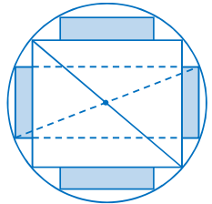

Câu 6. Đại số
Phần I — Trắc nghiệm chọn một phương án
0,31 điểm
Trong không gian $Oxyz$ với $\overrightarrow{i}, \overrightarrow{j}, \overrightarrow{k}$ lần lượt là vectơ đơn vị của các trục $O x,\, O y,\, O z$ , toạ độ của vectơ $\overrightarrow{a}=2 \overrightarrow{i}+3 \overrightarrow{k}$ là
Câu 13. Đại số
Phần II — Trắc nghiệm đúng hoặc sai
1,24 điểm
Một bác tài xế taxi thống kê lại độ dài quãng đường bác đã lái xe mỗi ngày trong một tháng ở bảng sau.
Độ dài quãng đường (km) | Tần số (ngày)
$[60;80)$ | $3$
$[80;100)$ | $9$
$[100;120)$ | $10$
$[120;140)$ | $6$
$[140;160)$ | $2$
(Nhấp vào ô màu vàng để chọn đúng / sai)
Mỗi ý a), b), c)… là một phát biểu độc lập: nhấp vào ô để chọn Đúng/Sai,
0,31 điểm mỗi ý.
Câu 14. Đại số
Phần II — Trắc nghiệm đúng hoặc sai
1,24 điểm
Một trang trại dự tính chi phí trung bình để thu hoạch $x$ tấn nông sản thông qua hàm số $f(x) = \dfrac{3x^2 + 1\,200}{x}$ (nghìn đồng/tấn), $x \gt 0$ .
(Nhấp vào ô màu vàng để chọn đúng / sai)
Mỗi ý a), b), c)… là một phát biểu độc lập: nhấp vào ô để chọn Đúng/Sai,
0,31 điểm mỗi ý.
Câu 15. Đại số
Phần III — Trắc nghiệm trả lời ngắn
0,64 điểm
Một công ty chuyên sản xuất dụng cụ thể thao nhận được đơn đặt hàng sản xuất $8\,000$ quả bóng rổ. Công ty có một số máy móc, mỗi máy có khả năng sản xuất $30$ bóng rổ trong một giờ. Chi phí thiết lập mỗi máy là $200$ nghìn đồng. Sau khi thiết lập, quá trình sản xuất sẽ diễn ra hoàn toàn tự động và chỉ cần có người giám sát. Chi phí trả cho người giám sát là $192$ nghìn đồng mỗi giờ. Công ty cần sử dụng bao nhiêu máy móc để chi phí hoạt động đạt mức thấp nhất?
Trả lời ngắn — gõ kết quả, kèm đơn vị nếu đề hỏi đơn vị.
Câu 16. Hình họcKhông vẽ hình
Phần III — Trắc nghiệm trả lời ngắn
0,64 điểm
Trong không gian chọn hệ trục tọa độ cho trước, đơn vị đo lấy kilômét, ra đa phát hiện một máy bay chiến đấu của Anh di chuyển với vận tốc và hướng không đổi từ điểm $M(500;200;10)$ đến điểm $N(800;300;10)$ trong $20$ phút. Nếu máy bay tiếp tục giữ nguyên vận tốc và hướng bay thì tọa độ của máy bay sau $4$ phút tiếp là $Q(a;\,b;\,c)$ . Khi đó $a+b+c$ bằng bao nhiêu?
Trả lời ngắn — gõ kết quả, kèm đơn vị nếu đề hỏi đơn vị.
Câu 17. Đại số
Phần III — Trắc nghiệm trả lời ngắn
0,63 điểm
Sự thay đổi dân số của một thị trấn sau $t$ năm ( $0 ≤ t ≤ 6$ ) được mô hình hóa bởi $P(t) = 1 \, 000 + 300~t^2 - 50~t^3$ (người). Dân số tăng nhanh nhất (tốc độ tăng là cực đại) vào năm thứ mấy?
Trả lời ngắn — gõ kết quả, kèm đơn vị nếu đề hỏi đơn vị.
Câu 18. Đại số
Phần III — Trắc nghiệm trả lời ngắn
0,63 điểm
Bảng thống kê cân nặng của $50$ quả xoài được lựa chọn ngẫu nhiên sau khi thu hoạch ở nông trường như sau:
Cân nặng (g) | Số quả xoài
$[250;290)$ | $2$
$[290;330)$ | $12$
$[330;370)$ | $19$
$[370;410)$ | $12$
$[410;450)$ | $5$
Tìm khoảng tứ phân vị của mẫu số liệu ghép nhóm trên.
Trả lời ngắn — gõ kết quả, kèm đơn vị nếu đề hỏi đơn vị.
Câu 19. Đại số
Phần III — Trắc nghiệm trả lời ngắn
0,63 điểm
Cho bảng mẫu số liệu ghép nhóm sau:
Nhóm | Tần số
$[20;26)$ | $7$
$[26;32)$ | $9$
$[32;38)$ | $5$
$[38;44)$ | $4$
$[44;50)$ | $11$
Tính độ lệch chuẩn của mẫu số liệu ghép nhóm trên. (Làm tròn kết quả đến chữ số hàng phần trăm)
Trả lời ngắn — gõ kết quả, kèm đơn vị nếu đề hỏi đơn vị.
Câu 20. Hình họcCó vẽ hình
Phần III — Trắc nghiệm trả lời ngắn
0,63 điểm
Từ một khúc gỗ tròn hình trụ có đường kính bằng $40$ cm, cần xẻ thành một chiếc xà có thiết diện ngang là hình vuông và bốn miếng phụ được tô màu xám như hình vẽ dưới đây.

Tìm chiều rộng $x$ (đơn vị cm) của miếng phụ để diện tích sử dụng theo thiết diện ngang là lớn nhất. ( kết quả làm tròn đến hàng phần trăm )
Trả lời ngắn — gõ kết quả, kèm đơn vị nếu đề hỏi đơn vị.